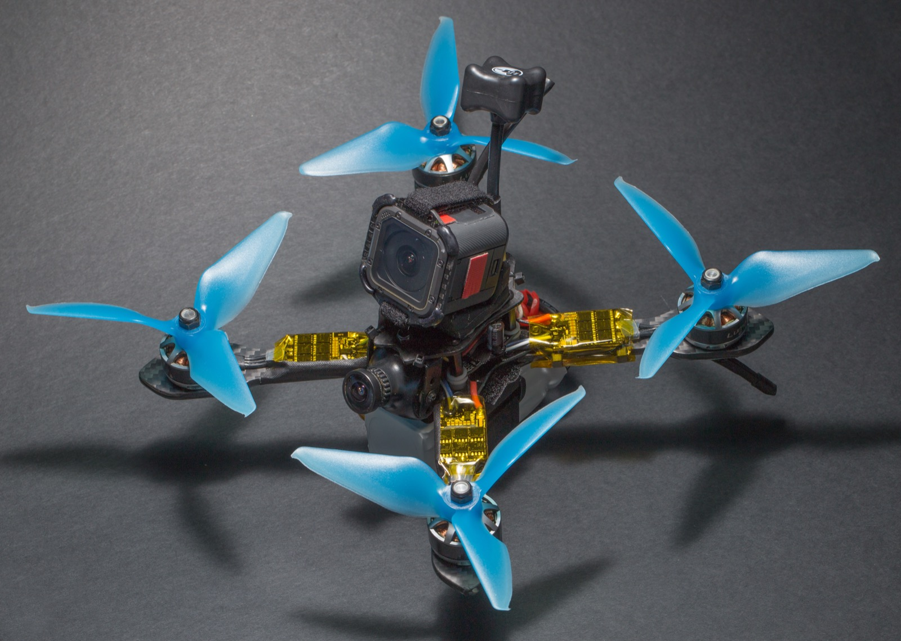

3 Anatomy of a Multirotor: Frames, Motors, and Propulsion
A multirotor is a remarkably austere machine. It has no swashplate, no tail rotor, no control surfaces, no gearbox, and in the common case no moving part at all except the four shafts that spin the propellers. Everything the aircraft does — hover, translate, rotate, arrest a gust — it does by changing four numbers, the angular velocities of four rotors, several hundred times a second. That austerity is the whole reason the configuration took over: it moves the entire problem of flight control out of mechanism and into software, which is cheap to iterate and free to copy.
The consequence for an engineer is that the hardware questions become sizing questions rather than mechanism-design questions. Nobody designing a quadcopter invents a linkage; they choose a frame span, a motor, a propeller, a speed controller, and a battery, and those five choices are coupled tightly enough that changing any one of them forces the others. This chapter is about that coupling. It works through the configuration decision (why four rotors rather than six or a wing), the frame as a structure that carries load and sets propeller geometry, the brushless motor and what its KV rating actually specifies, and the propeller as the component that converts shaft power into thrust — ending with a complete worked sizing of the airframe the running example flies on. That sizing is what the previous chapter’s closing argument demands: value migrates up the stack into software only where the hardware underneath is well enough understood to be selected competently, and selecting it competently is arithmetic, not intuition.
3.1 Learning Objectives
- Compare quadcopter, hexacopter, and fixed-wing configurations quantitatively by hover or cruise power, payload fraction, maneuverability, and tolerance to a motor failure, and select a configuration from stated mission requirements.
- Explain the load path through a multirotor frame, and compute the propeller diameter a given frame wheelbase can physically accommodate.
- Interpret a brushless motor designation such as 2812 900KV, derive the no-load speed from the battery voltage, and use the back-electromotive-force model to explain why the loaded speed is always lower.
- Apply momentum theory to estimate hover power and endurance from all-up weight and rotor disc area, and propagate an added payload through to the resulting loss of flight time.
- Justify a complete propulsion configuration — motor KV, propeller diameter and pitch, electronic speed controller current rating, and battery cell count — against a stated payload, endurance, and speed requirement.
3.2 Key Vocabulary
- Airframe — the structural assembly of a drone: frame plates, arms, motor mounts, standoffs, and landing gear, excluding propulsion, avionics, and payload. Its job is to hold every other component in fixed relative position while transmitting rotor thrust to the vehicle’s centre of mass without deflecting enough to disturb the inertial sensors.
- Brushless motor — a synchronous permanent-magnet machine in which commutation is performed electronically rather than by mechanical brushes. In the outrunner form used on multirotors, the permanent magnets are bonded to a rotating outer bell and the copper windings sit on a stationary inner stator.
- Stator diameter and stator height — the two millimetre dimensions in a motor designation such as 2812 (28 mm diameter, 12 mm height). Together they set the volume of iron and copper, and therefore the torque the motor can produce continuously without overheating.
- KV rating — the motor’s speed constant, in revolutions per minute per volt of back-electromotive force, measured with no load on the shaft. It is a property of the winding, not of the battery, and it fixes the trade between speed and torque for a given amount of motor.
- Back-electromotive force (back-EMF) — the voltage a spinning motor generates in opposition to the applied voltage, proportional to shaft speed. Its constant is the reciprocal of the KV rating, and its existence is why a loaded motor never reaches its no-load speed.
- ESC (Electronic Speed Controller) — the power-electronic stage between battery and motor. It switches a set of MOSFETs to synthesize the three-phase waveform that spins the rotor, and it regulates the effective voltage applied to the motor in response to a throttle command from the flight controller.
- Pitch (propeller) — the axial distance a propeller would advance in one revolution if it moved through a solid medium without slip, quoted in inches alongside the diameter. Pitch sets the aggressiveness of the blade’s angle of attack and therefore the airspeed at which the propeller stops producing useful thrust.
- Disc loading — thrust per unit rotor disc area, in newtons per square metre. It is the single strongest predictor of hover efficiency: low disc loading means a large mass of air accelerated gently, which is cheap, and high disc loading means a small mass of air accelerated hard, which is expensive.
- Figure of merit (FM) — the ratio of the ideal induced hover power predicted by momentum theory to the actual shaft power a real rotor requires, typically 0.4 to 0.6 for small multirotor propellers and 0.7 or better for a full-size helicopter rotor.
- Thrust-to-weight ratio (TWR) — total static thrust at full throttle divided by all-up weight. Values below about 2 leave inadequate control authority; 2 to 3 suits stable survey work; 8 and above characterizes racing aircraft.
- All-up weight (AUW) — the mass of the complete aircraft as flown: airframe, propulsion, avionics, battery, and payload. Every performance figure in this chapter is a function of it.
- Wheelbase — the motor-shaft-to-motor-shaft distance across the frame’s longest diagonal, in millimetres, and the number that names most commercial frames. It bounds the propeller diameter the aircraft can swing.
- S rating — the number of lithium-polymer cells wired in series in a battery pack, each contributing 3.7 V nominal, 4.2 V fully charged, and about 3.5 V at the practical discharge floor.
3.3 Choosing a Configuration
The deck-level comparison of quadcopter, hexacopter, and fixed-wing aircraft is usually presented as a table of adjectives — simplest, more complex, less efficient. Those adjectives are all downstream of two pieces of physics, and it is worth deriving them.
3.3.1 Why a wing beats a rotor for endurance, and loses everywhere else
A rotorcraft in hover supports its weight by throwing air downward. Momentum theory gives the minimum power this can possibly cost. If a rotor of disc area \(A\) produces thrust \(T\) by accelerating air to an induced velocity \(v_i\) in the far wake, mass conservation and momentum balance give
\[ \begin{aligned} v_i &= \sqrt{\frac{T}{2\rho A}}, \\ P_{\text{ideal}} &= T v_i = \frac{T^{3/2}}{\sqrt{2\rho A}}, \end{aligned} \]
with \(\rho\) the air density. Two features of that expression govern all multirotor design. First, hover power grows as thrust to the three-halves power, so mass is punished superlinearly. Second, power falls as the square root of disc area, so for a fixed thrust the cheapest possible rotor is the largest one that will fit.
A fixed-wing aircraft never pays this bill, because it borrows its lift from forward motion. In steady cruise the thrust required is weight divided by the lift-to-drag ratio, \(T = W/(L/D)\), and the propulsive power is \(Tv\). For a 1.7 kg airframe with a modest \(L/D\) of 10 cruising at 15 m/s,
\[ \begin{aligned} T &= \frac{(1.7)(9.81)}{10} = 1.67\ \text{N}, \\ P &= (1.67)(15) = 25\ \text{W}. \end{aligned} \]
Twenty-five watts of propulsive power to keep 1.7 kg airborne. The equivalent quadcopter, sized later in this chapter, needs roughly 190 W of shaft power to hold the same mass motionless. Carried through the same propeller, motor, ESC, and avionics losses used later — about 0.65 propeller efficiency, 0.8 combined motor-and-ESC efficiency, and a 12 W avionics allowance — the wing draws roughly 60 W from the battery against the quadcopter’s 250 W, so the same 62 Wh of usable pack energy buys about an hour aloft and some 55 km of ground track instead of a quarter of an hour over one spot. That factor of four is not an engineering deficiency to be optimized away; it is the definition of the trade. Wings buy endurance and range by giving up the ability to stop. Rotors buy the ability to stop — to hover over one nest, one insulator, one crack in a bridge soffit — and pay for it in watts.
3.3.2 Why four rotors, and what six buys
Within rotorcraft, the number of rotors is a second, subtler decision. Four is the minimum that gives full attitude control with fixed-pitch propellers: two counter-rotating pairs, so that differential thrust produces roll and pitch moments while differential drag torque between the pairs produces yaw, and all four together produce collective thrust. Four independent actuators, four controlled degrees of freedom, no redundancy anywhere.
![Side-by-side labeled top-down diagrams of a quadcopter and a hexacopter. On the left, four dashed rotor discs sit at the ends of an X frame, each with a curved rotation arrow and a CW or CCW label showing that diagonal rotors spin the same way, above text stating that differential thrust produces roll and pitch while differential drag torque produces yaw. On the right, six rotor discs ring a central hub with rotation directions alternating around the ring to form three counter-rotating pairs. Beneath each layout, matched comparison lines give total disc area, 0.203 versus 0.304 square metres for four versus six 10-inch propellers, induced hover power, 1.00 baseline versus 0.82 times for an 18 percent saving, and the outcome of losing one rotor: with four going to three the quadcopter cannot balance thrust and torque and falls, while with six going to five each surviving rotor carries 1.2 times its share and the aircraft surrenders yaw, degrades, and lands.](../../assets/images/diagrams/quadcopter-vs-hexacopter.svg)
Figure 3.1 sets the two layouts side by side, and everything the rest of this section quantifies — disc area, induced power, and what a rotor failure leaves behind — is already visible in the geometry.
Six rotors offer two distinct advantages, one obvious and one not. The obvious one is thrust: more motors mean more lift, which is why heavy-lift and cinematography platforms are hexacopters and octocopters. The less obvious one is that six rotors on the same frame span give more total disc area than four. For a hexacopter carrying six 10-inch propellers, total disc area is \(6 \times 0.0507 = 0.304\ \text{m}^2\) against \(4 \times 0.0507 = 0.203\ \text{m}^2\) for the quad. Since induced power scales as \(A^{-1/2}\), the hexacopter needs
\[\sqrt{\frac{0.203}{0.304}} = 0.82\]
of the quadcopter’s induced power for the same total thrust — an 18 % saving. That saving is real but fragile: two extra motors, two extra speed controllers, two extra arms, and the wiring for both typically add 15 to 25 % to the empty weight, and since hover power scales as \(W^{3/2}\), the added mass usually consumes the aerodynamic gain. Hexacopters are chosen for lift capacity and redundancy, not for efficiency, and a designer who claims otherwise has not done the mass accounting.
Redundancy is the argument that actually justifies the extra rotors, and it deserves precision, because it is routinely overstated. Losing one rotor of six leaves five that must collectively produce the same thrust, so each rises to \(6/5 = 1.2\) times its previous share — easily within the margin of a platform designed to a thrust-to-weight ratio of 2. But sufficient thrust is not the same as retained controllability. In the common star layout, with all six arms equally spaced and alternating rotation directions, the loss of one rotor leaves a control allocation that cannot simultaneously satisfy roll, pitch, yaw, and thrust demands. Practical fault-tolerant controllers therefore surrender yaw: the aircraft is allowed to rotate continuously about its vertical axis while attitude and position are held, which is survivable and lands the vehicle but is not normal flight. A quadcopter has no equivalent option — losing one of four rotors makes it impossible to produce nonzero collective thrust with zero net moment, and the aircraft falls unless it enters a deliberately spinning relaxed-hover mode that few production autopilots implement. The honest statement is that a hexacopter degrades and a quadcopter fails, which matters enormously when the aircraft flies over people or carries something expensive, and matters very little for a research vehicle flown over an empty field.
3.3.3 Size classes
Multirotors organize naturally into classes by propeller size, and every other parameter follows from it. Sub-100-gram indoor aircraft use 1- to 3-inch ducted propellers; 5-inch aircraft in the 500–800 g range are the racing and freestyle class; 7- to 10-inch aircraft at 1–3 kg are the long-range and light-mapping class; 12- to 32-inch aircraft from 5 to 50 kg are the heavy-lift class that carries survey LiDAR and spray tanks; and above 40 inches the vehicles are cargo aircraft with regulatory profiles closer to crewed aviation than to hobby flight. Reading that progression through the momentum-theory result explains why it exists: disc area rises as the square of diameter, so the larger classes are not merely bigger but fundamentally more efficient per kilogram lifted, which is what makes long endurance with real payload possible at all. The research platforms in this book sit in the 7- to 10-inch class, which is the smallest class with enough surplus lift to carry a companion computer and a depth camera while remaining well under regulatory weight thresholds.
3.4 Anatomy: What the Parts Do
Strip a research quadcopter to its components and the inventory is short: a frame, four motors, four propellers, four speed-controller channels, a flight controller with its inertial sensors, a satellite-navigation receiver and magnetometer, a radio receiver, a telemetry link, a battery, a power-distribution board with a voltage and current sensor, and whatever payload justifies the flight. On a research aircraft one more component appears — a companion computer running the autonomy software — and it is the only part of the list that is not present on a hobby aircraft.

Figure 3.2 shows the arrangement on a compact racing airframe, which is a useful teaching object precisely because nothing is hidden: the arms, the motor mounts, the sandwiched electronics stack, and the wiring runs are all visible at once. A larger survey platform packages the same functional blocks behind covers and inside booms, but the block diagram is identical.
The power chain runs battery \(\rightarrow\) power distribution \(\rightarrow\) ESC \(\rightarrow\) motor \(\rightarrow\) propeller \(\rightarrow\) air, and every stage of it dissipates a fraction of what it receives. The signal chain runs sensors \(\rightarrow\) flight controller \(\rightarrow\) ESC, closing an attitude loop at several hundred hertz. The two chains meet at the ESC, which is the only component that is simultaneously a power converter and a digital peripheral. Understanding a drone’s performance means tracking energy along the first chain; understanding its behaviour means tracking information along the second. The remainder of this chapter follows the first chain; the Sensing the World chapter takes up the second, and Part II develops it in full.
3.5 The Frame
The frame does three things, in descending order of how often they are appreciated: it transmits rotor thrust into the vehicle’s mass, it fixes the geometry of the propeller discs relative to one another, and it isolates the inertial sensors from vibration.
3.5.1 Load path and geometry
The load path is a cantilever problem. Each motor applies an upward force at the tip of an arm, and the arm carries that force as a bending moment into the centre plates, where the two plates and their standoffs form a shallow box section that redistributes the four arm loads into the mass of the battery and payload hanging below. This is why the centre section is built as two plates rather than one: a single plate resists bending only through its own thickness, whereas two plates separated by standoffs resist it through the separation, in exactly the way an I-beam’s flanges do. The arms carry bending; the plates carry the resulting couple.
Frame plan-forms have names — X, H, hybrid-X, and box — and the differences are functional. The X layout places four arms symmetrically about the centre, which makes the inertia tensor nearly symmetric in roll and pitch and gives identical response about both axes; it is the default for general-purpose and research aircraft. The H layout separates two longitudinal booms joined by cross-members, giving a long central bay for a battery or camera and a deliberately asymmetric inertia — quicker in roll than in pitch — which suits camera platforms that want a stable pitch axis. Hybrid-X stretches an X frame lengthwise so the rear propellers stay out of a forward-facing camera’s field of view. Box frames add a second deck above the propeller plane for impact protection at the cost of weight and drag. The choice is a control-and-packaging decision, not an aesthetic one.
Frame span sets propeller size, and the arithmetic is worth doing explicitly because it is the constraint that most often bites during a build. A frame’s advertised wheelbase is the motor-to-motor distance across the longest diagonal. On a symmetric X frame the four motors sit at the corners of a square whose diagonal is the wheelbase, so the distance between adjacent motors — the pair whose propellers can collide — is the square’s side:
\[s = \frac{d}{\sqrt{2}}.\]
For the 500 mm wheelbase of the class of frame used later in this chapter, \(s = 500/1.414 = 354\ \text{mm}\). A 10-inch propeller is 254 mm across, leaving \(354 - 254 = 100\ \text{mm}\) of tip-to-tip clearance, which is ample. A 13-inch propeller is 330 mm across and leaves only 24 mm, close enough that the tip vortex shed by one disc washes into its neighbour and both lose thrust while gaining noise. A 14-inch propeller is 356 mm across — wider than the motor spacing itself, so the discs physically intersect and the configuration is impossible at any clearance. The frame, in other words, quietly caps the aircraft’s maximum efficiency, because it caps disc area.
3.5.2 Stiffness, resonance, and why it matters to software
The third job, vibration isolation, is where frame design touches autonomy. Every propeller injects excitation at its rotational frequency and at the blade-passing frequency, which for a two-bladed propeller is twice the rotational rate. The hover condition worked below spins the rotors at about 5,400 RPM, or 90 Hz, with a blade-passing component at 181 Hz. An inertial measurement unit rigidly attached to a frame whose first bending mode lies near either of those frequencies will report the frame’s resonance as though it were vehicle motion, and the attitude controller will faithfully attempt to correct it — which is how a well-tuned aircraft on a floppy frame produces hot motors, an oscillating attitude estimate, and a mysteriously short flight time.
The engineering responses are all structural or filtering: raise the frame’s first natural frequency by making the arms stiffer relative to their mass, isolate the flight controller on damping mounts so the mechanical path is a low-pass filter, and apply notch filters in the autopilot keyed to measured motor RPM. The first response is a materials problem, and it is why carbon-fibre composite dominates: what matters for a cantilever’s resonant frequency is specific stiffness, the ratio of elastic modulus to density, and a unidirectional carbon laminate exceeds aluminium on that ratio by a wide margin while a 3D-printed thermoplastic falls far below it.
Reading the classic material comparison — plastic (PLA or ABS) medium weight, low strength, low stiffness, cheap, easy to make; aluminium heavy, strong, stiff, moderate cost and difficulty; carbon fibre very light, very strong, very stiff, expensive, difficult — the columns line up too neatly to be a coincidence, and they are not: each material is a different point on the same trade between specific stiffness and manufacturability. The Materials and Power chapter that follows this one develops that trade properly, including layup direction, failure modes under impact, and the electrical-conductivity problem that makes carbon fibre an awkward neighbour for antennas. For present purposes the operational summary is enough: prototype in printed plastic where iteration speed dominates and loads are low, build flying structure in carbon fibre, and use aluminium for local fittings such as motor mounts and standoffs, where machinability and thread strength matter more than mass.
3.6 Motors
Almost every flying multirotor uses a brushless outrunner. The stationary inner stator carries three sets of copper windings on a laminated iron core; the rotating outer bell carries permanent magnets. Energizing the windings in sequence pulls the magnets around, and because the windings are the stationary part, they can be cooled and driven without any sliding contact. Brushed motors are cheaper and simpler and survive only on toys, because brushes wear, arc, and cap efficiency well below what the same mass of brushless machine achieves.
The commutation sequence is the ESC’s job, and it requires knowing where the rotor is. Some motors report position with Hall-effect sensors; most drone motors omit them and infer position from the back-EMF waveform on the undriven phase, which is why a sensorless drone motor stutters at startup — there is no back-EMF until it is already turning.
3.6.1 Reading a motor designation
A label such as 2812 900KV encodes three numbers. The first two digits, 28, are the stator diameter in millimetres. The next two, 12, are the stator height. Together they specify the volume of the magnetic circuit and therefore the continuous torque available before the copper overheats: a 2812 has substantially more iron and copper than the 2207 typical of a 5-inch racing aircraft, and vastly more than the 0802 of an indoor micro. The third number, 900KV, is the speed constant.
![Labeled cutaway drawing of a brushless outrunner motor. A vertical shaft runs through two bearings inside a central mounting tube. Around the tube sits the stator, drawn as laminated iron teeth with copper winding bundles in the slots. An outer bell encloses the stator from above and the sides, with permanent magnets marked N and S bonded to its inner walls and a narrow air gap between magnets and stator. Dimension arrows mark the stator diameter as the 28 in a 2812 designation and the stator stack height as the 12, and a footer line decodes 2812 900KV.](../../assets/images/diagrams/brushless-motor-cross-section.svg)
Figure 3.3 locates all three numbers on the machine itself: the first two describe the stationary stack of iron and copper, and the third describes the winding wound onto it.
KV is not a power rating and it is not a quality rating. It is a winding property: the number of turns per phase determines how much back-EMF the machine generates per unit of rotational speed, and KV is the reciprocal of that constant expressed in convenient units. Rewinding a given stator with fewer turns of thicker wire raises KV and lowers torque per amp in exact proportion. Two motors with the same stator and different KV values contain the same iron and produce very nearly the same power; they simply divide it differently between speed and torque.
That reciprocal relationship is quantitative. If \(K_V\) is given in RPM per volt, the torque constant in SI units is
\[K_t = \frac{60}{2\pi K_V}\ \ \left[\frac{\text{N}\cdot\text{m}}{\text{A}}\right],\]
which for the 900KV motor is \(K_t = 60/(2\pi \cdot 900) = 0.0106\ \text{N}\cdot\text{m/A}\). A 450KV motor built on the same stator would deliver 0.0212 N·m/A — twice the torque per amp, at half the speed per volt.
3.6.2 Worked example: 900KV on a 6S pack
Take the 2812 900KV motor and a six-cell lithium-polymer battery, and follow the calculation all the way through.
Step 1 — battery voltage. A 6S pack is six cells in series. Nominal cell voltage is 3.7 V, so the pack is quoted at \(6 \times 3.7 = 22.2\ \text{V}\). Fully charged it sits at \(6 \times 4.2 = 25.2\ \text{V}\), and at the practical discharge floor of 3.5 V per cell it delivers \(6 \times 3.5 = 21.0\ \text{V}\). “6S” therefore names a voltage range of about 21 to 25 V, and the nominal figure is a convention for comparison, not a measurement.
Step 2 — no-load speed. By definition, KV is the shaft speed per volt of back-EMF with nothing on the shaft:
\[ \begin{aligned} N_0 &= K_V \cdot V = 900\ \frac{\text{RPM}}{\text{V}} \times 22.2\ \text{V} \\ &= 19{,}980\ \text{RPM} \approx 20{,}000\ \text{RPM}. \end{aligned} \]
On a freshly charged pack the same motor spins at \(900 \times 25.2 = 22{,}680\) RPM, and on a nearly exhausted one at \(900 \times 21.0 = 18{,}900\) RPM. A 20 % speed variation across a single flight is built into the chemistry, and it is one reason flight controllers close a loop on measured attitude rather than commanding motor speeds open-loop.
Step 3 — what happens under load. The no-load figure is never reached in flight, for two separate reasons that are often conflated. The first is the motor’s own resistance. In steady state the applied terminal voltage splits between back-EMF and the resistive drop, \(V = E + IR\), and the shaft speed tracks the back-EMF alone, \(N = K_V E = K_V(V - IR)\). Suppose the propeller loads this motor to 12 A and the effective winding resistance is \(R = 0.08\ \Omega\). Then the drop is \(IR = 0.96\) V, the back-EMF is \(E = 22.2 - 0.96 = 21.24\) V, and
\[N = 900 \times 21.24 = 19{,}116\ \text{RPM},\]
about 4 % below no-load. Shaft power is the back-EMF power, \(P_{\text{shaft}} = EI = 21.24 \times 12 = 255\ \text{W}\), against an electrical input of \(VI = 22.2 \times 12 = 266\ \text{W}\); the missing \(I^2R = 144 \times 0.08 = 11.5\ \text{W}\) is heat in the copper. This first-order model omits iron and windage losses, so its implied efficiency is optimistic — measured peak efficiency for a motor of this class is nearer 80–85 % — but the structure is right, and it shows that resistive droop alone is a small effect.
The second and much larger reason is throttle. The ESC does not apply the full pack voltage except at maximum throttle; at partial throttle it applies a reduced effective voltage, and the motor settles wherever the torque it produces equals the torque the propeller absorbs. That equilibrium is the intersection of two curves — a motor curve, torque falling linearly with speed, and a propeller curve, absorbed torque rising as roughly the square of speed. A 10-inch propeller in hover, computed in the next section, holds a motor near 5,400 RPM, nowhere near any no-load figure. The no-load speed is a ceiling, useful for checking that a motor and battery are compatible at all, not a prediction of flight behaviour.
Step 4 — sanity-check the propeller against that speed. Nearly 20,000 RPM is \(\omega = 19{,}980 \times 2\pi/60 = 2092\ \text{rad/s}\). On a 5-inch propeller (radius 0.0635 m) the blade tip travels at \(2092 \times 0.0635 = 133\ \text{m/s}\), Mach 0.39 at sea level — fast, noisy, and acceptable. Put a 10-inch propeller (radius 0.127 m) on the same motor and the tip speed becomes \(2092 \times 0.127 = 266\ \text{m/s}\), Mach 0.78, where compressibility destroys the blade section’s lift-to-drag ratio and the noise becomes intolerable. The motor would never actually reach that speed, because the torque a 10-inch propeller absorbs at high RPM far exceeds what this winding can supply, so in practice it would stall the motor thermally instead. This is the whole content of the familiar rule that high KV pairs with small propellers and low KV with large ones: KV must be chosen so that the speed the battery can drive is the speed the propeller wants.
The design consequence runs in the other direction too. Suppose a 10-inch propeller must turn at a hover speed of 5,400 RPM on a 4S pack (14.8 V nominal). A motor of \(5{,}400/14.8 \approx 365\) KV would reach that speed only at full throttle, leaving no authority to climb or to reject a gust. Hover should instead sit near 40 to 50 % of the available throttle range, which means choosing a KV roughly twice as high — 730 to 900 KV, exactly the familiar rating for this propeller class. An 880KV motor confirms the arithmetic: at 5,400 RPM its back-EMF is \(5{,}400/880 = 6.1\) V, so the ESC is applying about 41 % of the pack voltage and the remaining 59 % is headroom. Move the same aircraft to a 6S pack and the equivalent motor is a \(900 \times 14.8/22.2 = 600\) KV unit, which draws two-thirds the current for the same mechanical power. Since copper loss goes as \(I^2R\), that is a \((2/3)^2 = 0.44\) factor — a 56 % reduction in resistive heating — which is precisely why larger and more serious aircraft run higher pack voltages. Voltage is free; current is expensive, in copper, in connector mass, and in ESC silicon.
3.7 Propellers
The propeller is a rotating wing, and its two headline numbers are diameter and pitch, both quoted in inches. A designation such as 10 × 4.5 means a 254 mm diameter and a 4.5-inch geometric pitch; a three-number form such as 5 × 5 × 3 adds the blade count, here three blades. Figure 3.4 lays the three numbers out on the geometry itself.
![Three-panel labeled diagram of propeller geometry. Left panel: a top-down view of a two-blade propeller inside a dashed circle marking the swept disc, with a dimension arrow across the disc labeled diameter, the 10, tip-to-tip span of 10 inches or 254 millimetres. Top-right panel: a dashed cylinder with a helical line completing one full turn, with a dimension arrow marking the axial advance of that turn labeled pitch, the 4.5, axial advance in one full revolution assuming no slip. Bottom-right panel: small top-down drawings of a two-blade propeller labeled 10 by 4.5, two blades implied, and a three-blade propeller labeled 5 by 5 by 3, third number three blades.](../../assets/images/diagrams/propeller-geometry.svg)
Diameter determines how much air the disc can act on, and by the momentum result above it is the dominant efficiency lever. Pitch is the theoretical axial advance per revolution — the distance the propeller would screw forward through a solid — and it sets the blade’s built-in angle of attack and thus the airspeed at which the blade stops working. Multiply pitch by rotational speed and the result is pitch speed, a hard theoretical ceiling on forward flight:
\[v_{\text{pitch}} = \text{pitch} \times N.\]
A 4.5-inch (0.1143 m) pitch at 9,000 RPM (150 rev/s) gives \(0.1143 \times 150 = 17.1\ \text{m/s}\), about 62 km/h; real aircraft achieve 60 to 70 % of pitch speed, because the blade needs a positive angle of attack to make thrust at all and reaches zero thrust before the theoretical limit. The dimensionless form of the same statement is the advance ratio \(J = v/(nD)\), which for that propeller at 15 m/s is \(J = 15/(150 \times 0.254) = 0.39\), uncomfortably close to the pitch-to-diameter ratio \(4.5/10 = 0.45\) at which thrust vanishes.
Blade count is the third lever. More blades add thrust in a given diameter but at worse efficiency, because each blade flies in its predecessor’s wake. Racing aircraft, which are propeller-diameter-limited by their frames and care about response rather than endurance, use three or more blades; endurance aircraft use two.
For quantitative work, thrust and shaft power come from empirically measured non-dimensional coefficients:
\[T = C_T \rho n^2 D^4, \qquad P = C_P \rho n^3 D^5,\]
with \(n\) in revolutions per second and \(D\) in metres. Both coefficients are specific to a propeller and rise strongly with pitch-to-diameter ratio: a 10 × 4.5 survey propeller (\(P/D = 0.45\)) has \(C_T\) near 0.10, while an aggressive 5 × 5 racing tri-blade (\(P/D = 1.0\)) may be two to three times higher. They are measured on a thrust stand, not derived, and manufacturers publish them alongside thrust tables — which is why component selection for a real aircraft is a table-lookup exercise anchored by the scaling laws rather than a pure calculation.
Those scaling laws are nonetheless the ones to internalize. At fixed RPM, thrust scales as \(D^4\) and power as \(D^5\); at fixed thrust, induced power scales as \(D^{-1}\). Doubling propeller diameter therefore halves the power needed to hover — the single most effective efficiency change available to a designer, and the reason every endurance-driven design pushes propellers to the largest size the frame, the regulations, and the transport case will allow.
3.8 Putting It Together: Sizing a Research Quadcopter
The components only make sense together, so consider the platform the running example actually flies: a 500 mm-wheelbase quadcopter of the Holybro X500 V2 class, carrying a Pixhawk 6C flight controller, a companion computer, and a depth camera. That configuration is examined as a system in the Systems Architecture chapter in Part V; here the question is narrower — do the numbers work?
Mission requirements. Hover-capable, because the mission is to loiter over and pursue a target on the ground rather than to cover a corridor; 12 to 15 minutes of usable flight time; roughly 500 g of autonomy payload; and a total mass low enough to stay far below the 25 kg regulatory threshold that the Commercial Drone Landscape chapter identified as the dividing line for small uncrewed aircraft.
Configuration. Hover rules out a fixed wing despite the roughly fourfold endurance advantage computed at the start of this chapter. The redundancy argument for six rotors does not apply over an unpopulated test area, and the added mass, wiring, and cost would degrade every other figure. A quadcopter it is — chosen deliberately, over the hexacopter and fixed-wing alternatives, because maneuverability and simplicity are what the mission needs.
Mass budget. Frame, motors, ESCs, and wiring come to roughly 1.2 kg for a platform of this class; a 4S 5200 mAh lithium-polymer pack adds about 0.5 kg; autonomy payload adds 0.5 kg. Take the aircraft first without payload, at \(m = 1.7\) kg, and add the payload afterwards to see what it costs.
Propeller and disc loading. The frame accommodates 10-inch propellers with 100 mm of tip clearance, as computed earlier, so \(D = 0.254\) m and the disc area per rotor is \(A = \pi (0.127)^2 = 0.0507\ \text{m}^2\). Hover thrust per rotor is
\[T = \frac{mg}{4} = \frac{(1.7)(9.81)}{4} = 4.17\ \text{N},\]
a disc loading of \(4.17/0.0507 = 82\ \text{N/m}^2\), which is typical for this class. The figure matters because induced velocity, and therefore the power spent, grows as its square root: a rotor lifting the same weight over ten times the disc area would move the air an order of magnitude more gently and spend \(1/\sqrt{10} = 0.32\) — about a third — of the power. Small multirotors have poor endurance because they are forced by their own size into high disc loading.
Ideal hover power. From momentum theory, with \(\rho = 1.225\ \text{kg/m}^3\),
\[ \begin{aligned} v_i &= \sqrt{\frac{4.17}{2(1.225)(0.0507)}} = \sqrt{33.6} = 5.80\ \text{m/s}, \\ P_{\text{ideal}} &= (4.17)(5.80) = 24.2\ \text{W} \end{aligned} \]
per rotor, or 96.7 W for the aircraft. That is the aerodynamic floor: no propeller of this diameter, however well designed, can hover this mass for less, because the number counts only the kinetic energy left in the wake and ignores every real loss.
Real shaft power. Invert the thrust coefficient to find the rotational speed the hover thrust demands. With \(C_T = 0.10\) and \(D^4 = 4.16 \times 10^{-3}\ \text{m}^4\),
\[ \begin{aligned} n &= \sqrt{\frac{T}{C_T \rho D^4}} = \sqrt{\frac{4.17}{(0.10)(1.225)(4.16\times10^{-3})}} \\ &= \sqrt{8180} = 90.4\ \text{rev/s} = 5{,}425\ \text{RPM}, \end{aligned} \]
which is the 90 Hz excitation frequency quoted in the frame-vibration discussion above. Shaft power at that speed, with \(C_P = 0.05\) and \(D^5 = 1.057\times10^{-3}\ \text{m}^5\), is
\[P = (0.05)(1.225)(90.4)^3(1.057\times10^{-3}) = 47.9\ \text{W}\]
per rotor, 192 W for the aircraft. The implied figure of merit is \(24.2/47.9 = 0.51\), squarely in the expected range for a small propeller and a useful check that the coefficients and the momentum estimate are mutually consistent.
Electrical power and endurance. Motor and ESC efficiency together are about 80 % at this operating point, giving \(192/0.80 = 240\ \text{W}\) of electrical draw, plus roughly 12 W for the flight controller, receiver, telemetry radio, and companion computer — call it 252 W. A 4S 5200 mAh pack stores \(14.8 \times 5.2 = 77\ \text{Wh}\), of which about 80 % should be used if the cells are to survive many cycles, so 61.6 Wh is available. Hover endurance is
\[t = \frac{61.6\ \text{Wh}}{252\ \text{W}} = 0.244\ \text{h} = 14.7\ \text{min}.\]
That figure matches published flight times for platforms of this class, which is the point of doing the calculation: a first-principles estimate that lands within a minute or two of the manufacturer’s number confirms that the model captures what matters, and can therefore be trusted when the configuration changes.
The payload penalty. Now add the 500 g autonomy payload, taking the aircraft to 2.2 kg. Shaft power scales as \(m^{3/2}\) at fixed disc area, so
\[P' = 192 \times \left(\frac{2.2}{1.7}\right)^{3/2} = 192 \times 1.47 = 282\ \text{W},\]
electrical draw becomes \(282/0.80 + 12 = 365\ \text{W}\), and endurance falls to \(61.6/365 = 0.169\ \text{h} = 10.1\ \text{min}\). A 29 % increase in mass costs 31 % of the flight time. This is the payload-versus-endurance curve in one line of arithmetic, and it is why every gram on a research aircraft is contested: the companion computer’s heatsink, the length of the camera cable, and the choice between two connectors all appear eventually as seconds of loiter time.
Motor, ESC, and battery selection. Motors of the 2216-class turning a 10 × 4.5 propeller on 4S are rated at roughly 1.0 kgf of static thrust at about 20 A each, so the four together give about 4.0 kgf against a 2.2 kg loaded aircraft — a thrust-to-weight ratio of 1.8, marginal, and against the 1.7 kg unloaded aircraft a ratio of 2.35, adequate. Hover consumes only \(0.425/1.0 \approx 43\ \%\) of available thrust unloaded, which leaves genuine control authority for gust rejection and aggressive attitude commands; a ratio near 1.8 with payload is the point at which a designer should be looking at either larger motors or a lighter payload before adding anything else. Full-throttle current is about 20 A per motor, so 30 A ESCs give a comfortable margin, and a 4-in-1 ESC board is preferred because it halves the wiring mass and puts all four current paths on one plane with one battery connection. Peak battery draw is \(4 \times 20 = 80\ \text{A}\), which for a 5.2 Ah pack is a discharge rate of \(80/5.2 = 15\ \text{C}\) — well inside the 50 C rating typical of packs in this size, so the battery is chosen for its energy rather than its power.
What the numbers decided. Every choice above traces to the mission statement: hover capability forced a rotorcraft, the endurance requirement forced the largest propeller the frame would carry, propeller diameter and pack voltage jointly forced the motor KV, motor current forced the ESC rating, and the payload mass — the only part of the aircraft that exists for the mission rather than for flight — consumed a third of the endurance. That is mission-driven design in its actual form: not a slogan, but a chain of arithmetic in which each link constrains the next.
Two links in that chain were taken on trust. The arms were assumed stiff enough to hold the rotor discs where the geometry says they are, and the pack was assumed to deliver the energy printed on its label. Neither assumption is aerodynamic — the first belongs to materials and the second to chemistry — and both fail in ways that show up as bad flights rather than as bad numbers. They are where the next chapter begins.
The momentum-theory model used here is the simplest of a family. Blade-element momentum theory divides the blade into radial elements, applies two-dimensional aerofoil data to each, and integrates, which predicts how thrust and power vary with pitch distribution, blade planform, and Reynolds number rather than taking \(C_T\) and \(C_P\) as measured constants. It is the right tool for asking whether a propeller is well designed rather than merely how a given propeller performs. Readers pursuing endurance optimization should also study the Reynolds-number problem specific to small propellers: at 10-inch scale the blade sections operate near \(\mathrm{Re} \sim 10^5\), where laminar separation bubbles dominate and standard aerofoil data taken at \(\mathrm{Re} \sim 10^6\) substantially overpredicts performance. This is the single largest source of error when scaling published propeller data down to small aircraft.
3.9 Check Your Understanding
- A motor is labelled 2207 2400KV and is run on a 4S lithium-polymer pack. What is its no-load speed at nominal voltage, at full charge, and at the discharge floor? What do the digits 2207 tell you that the KV rating does not?
A 4S pack is 14.8 V nominal, 16.8 V fully charged (\(4 \times 4.2\)), and 14.0 V at a 3.5 V-per-cell floor. No-load speeds are \(2400 \times 14.8 = 35{,}520\) RPM, \(2400 \times 16.8 = 40{,}320\) RPM, and \(2400 \times 14.0 = 33{,}600\) RPM respectively. The digits 2207 give the stator’s physical size — 22 mm diameter, 7 mm height — which sets how much iron and copper carry the magnetic circuit and therefore the continuous torque available before thermal limits bite. KV describes only how the winding trades speed against torque; it says nothing about how much of either the motor can sustain. Two motors can share a KV rating and differ by a factor of three in continuous power.
- Explain why a 900KV motor and a 10-inch propeller is a poor pairing, using a quantitative argument rather than the rule of thumb.
Take the pairing on a 6S pack. No-load speed is \(900 \times 22.2 = 19{,}980\) RPM, or 2092 rad/s. On a 10-inch propeller (radius 0.127 m) the tip speed would be \(2092 \times 0.127 = 266\) m/s, Mach 0.78, where compressibility collapses the blade section’s lift-to-drag ratio. The motor never actually gets there, which is the real failure mode: absorbed propeller power scales as \(n^3 D^5\), so a 10-inch disc demands enormously more torque at any given speed than the winding of a 900KV motor — whose torque constant is only 0.0106 N·m/A — can supply without drawing currents that overheat the copper. The motor settles at a low speed, at high current, at poor efficiency, and gets hot. Correct pairings hold tip speed and absorbed torque in range simultaneously: 900KV suits 5-inch propellers, while a 10-inch propeller wants roughly 800–900KV on 4S or about 600KV on 6S.
- A survey quadcopter has a 450 mm wheelbase. What is the largest propeller diameter it can physically swing, and what practical diameter would you actually fit?
Adjacent motors on a symmetric X frame are separated by \(s = d/\sqrt{2} = 450/1.414 = 318\) mm. Propeller discs intersect once the diameter exceeds that spacing, so 318 mm (12.5 inches) is the absolute geometric limit and would leave the tips touching. In practice one wants tens of millimetres of clearance so that adjacent tip vortices do not interact and so that flexing arms cannot bring discs together in flight: a 9-inch propeller (229 mm) leaves 89 mm of clearance and a 10-inch (254 mm) leaves 64 mm, either of which is sensible; 11 inches (279 mm) leaves 39 mm and is aggressive. Fit 10-inch propellers.
- An aircraft of 1.4 kg all-up weight hovers on four 8-inch propellers. Estimate its ideal induced hover power, and state how that figure would change if the same mass were carried on four 10-inch propellers.
Thrust per rotor is \(T = (1.4)(9.81)/4 = 3.43\) N. An 8-inch propeller has radius 0.1016 m and disc area \(A = \pi(0.1016)^2 = 0.0324\ \text{m}^2\). Then \(v_i = \sqrt{3.43/(2 \times 1.225 \times 0.0324)} = \sqrt{43.2} = 6.57\) m/s and \(P_{\text{ideal}} = 3.43 \times 6.57 = 22.5\) W per rotor, or 90 W total. On 10-inch propellers (\(A = 0.0507\ \text{m}^2\)), induced power scales as \(A^{-1/2}\), so the total falls by a factor of \(\sqrt{0.0324/0.0507} = 0.80\) to about 72 W — a 20 % saving for a 25 % increase in diameter, consistent with \(P \propto 1/D\) at fixed thrust. The saving is only realizable if the frame can accommodate the larger discs and if the motors are re-selected to a lower KV; swapping propellers alone would overload the existing motors.
- A hexacopter and a quadcopter each weigh 4 kg all-up and carry 10-inch propellers. State the induced-power advantage of the hexacopter, then explain why hexacopters are nonetheless not chosen for efficiency.
Total disc area is \(6 \times 0.0507 = 0.304\ \text{m}^2\) against \(4 \times 0.0507 = 0.203\ \text{m}^2\). Induced power for a fixed total thrust scales as the inverse square root of total disc area, so the hexacopter needs \(\sqrt{0.203/0.304} = 0.82\) of the quadcopter’s induced power, an 18 % saving. But two extra motors, ESCs, arms, and wiring runs typically add 15–25 % to empty weight, and hover power scales as \(W^{3/2}\): a 20 % mass increase alone costs \(1.20^{1.5} = 1.31\), a 31 % power penalty that more than erases the aerodynamic gain. Hexacopters are selected for lift capacity and for graceful degradation after a rotor failure — where the remaining five each take \(6/5 = 1.2\) times their previous thrust share, though controllability is retained only by surrendering yaw control — not for efficiency.
- The sized aircraft above draws 252 W in hover and achieves 14.7 minutes from a 77 Wh pack at 80 % usable capacity (61.6 Wh). A colleague proposes doubling battery capacity to double flight time. Evaluate the proposal.
It does not work, because the battery is part of the mass that must be lifted. Doubling to a 4S 10400 mAh pack adds about 0.5 kg, taking all-up weight from 1.7 to 2.2 kg. Shaft power rises by \((2.2/1.7)^{3/2} = 1.47\) to 282 W, so electrical draw becomes \(282/0.80 + 12 = 365\) W. Usable energy doubles to 123 Wh, giving \(123/365 = 0.337\ \text{h} = 20.2\) minutes — a 37 % improvement, not 100 %. Continuing to add cells yields progressively less, and eventually nothing, since each increment of energy arrives attached to an increment of mass that consumes part of it; the optimum for a given airframe and chemistry falls at a battery mass fraction that is typically a third to a half of all-up weight. Real endurance gains come from larger propellers, lighter structure, or a different configuration entirely — which is the argument for a fixed wing when the mission does not require hover.
3.10 Try It
Specify a complete propulsion system for a mission of your own choosing, and defend every number in it.
Begin by writing one sentence stating what the aircraft must do, then convert it into four quantities: payload mass, required endurance, required cruise or loiter speed, and the maximum dimension that fits your transport case. Choose a configuration from those four figures and justify it explicitly against the two alternatives you rejected — if you choose a quadcopter, say what the hexacopter’s redundancy would have bought and why the mission does not need it; if you choose a fixed wing, say what you give up by not being able to hover.
Then size the system in the order the physics dictates. Pick the largest propeller diameter your frame span allows, computing adjacent-motor spacing as wheelbase divided by \(\sqrt{2}\) and leaving real tip clearance. Estimate all-up weight, compute hover thrust per rotor, and use momentum theory to get ideal induced power. Assume a figure of merit between 0.45 and 0.55 to convert that to shaft power, then a combined motor-and-ESC efficiency of about 0.8 to get electrical draw, and add an avionics allowance. Choose a pack voltage — justify 4S against 6S using the \(I^2R\) argument — and size its capacity for your endurance target, remembering that only about 80 % is usable. Select KV so that the propeller’s hover speed sits comfortably below no-load speed at your pack voltage, size the ESCs from full-throttle current with margin, and check thrust-to-weight against the 2:1 minimum.
Finally, run the sensitivity that separates a design from a wish. Add 200 g to your payload and recompute endurance using the \(m^{3/2}\) scaling. If the loss is tolerable, your design has margin; if it is not, identify which single change — a larger propeller, a lighter frame material, a different configuration — recovers the most flight time per gram or per dollar. That question, not the initial specification, is where real design begins.
Related Lab: See Appendix B for the lab assignment that applies this chapter’s concepts.